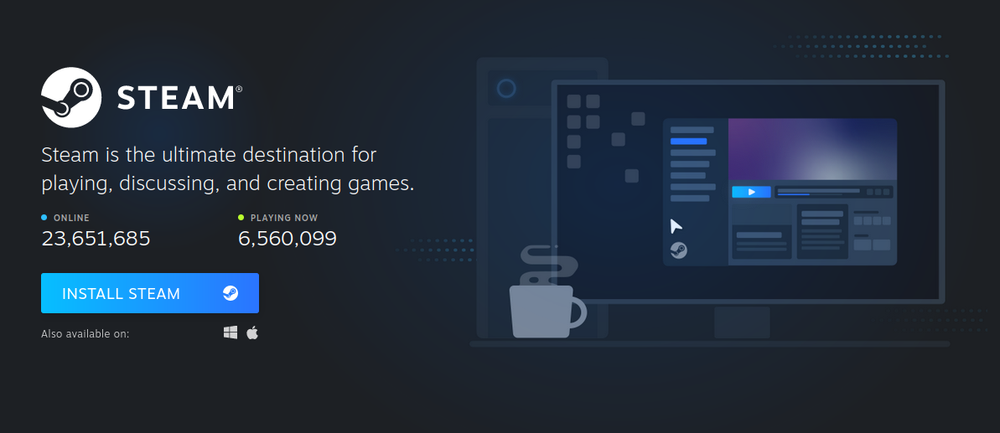
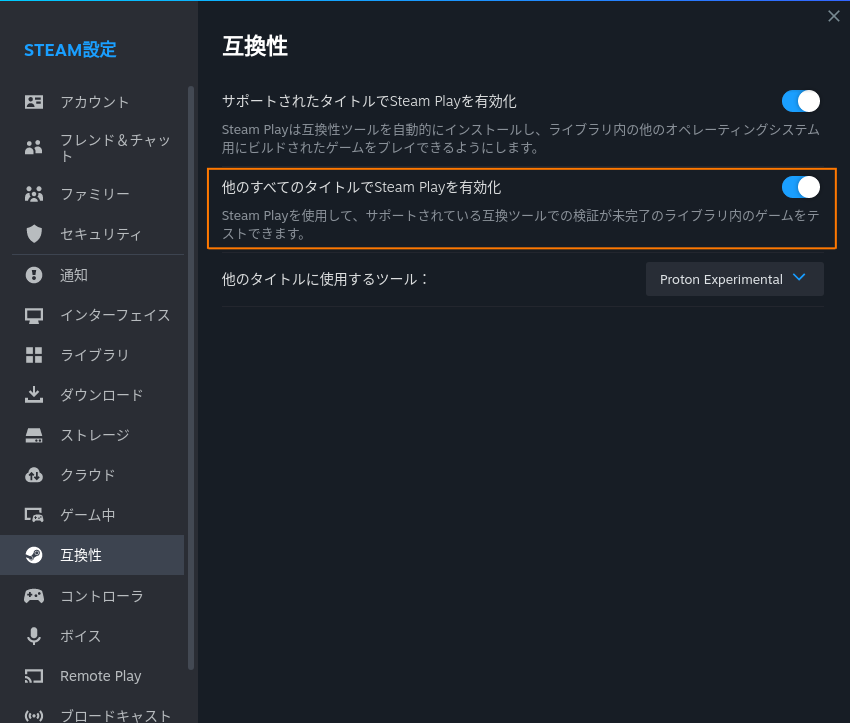
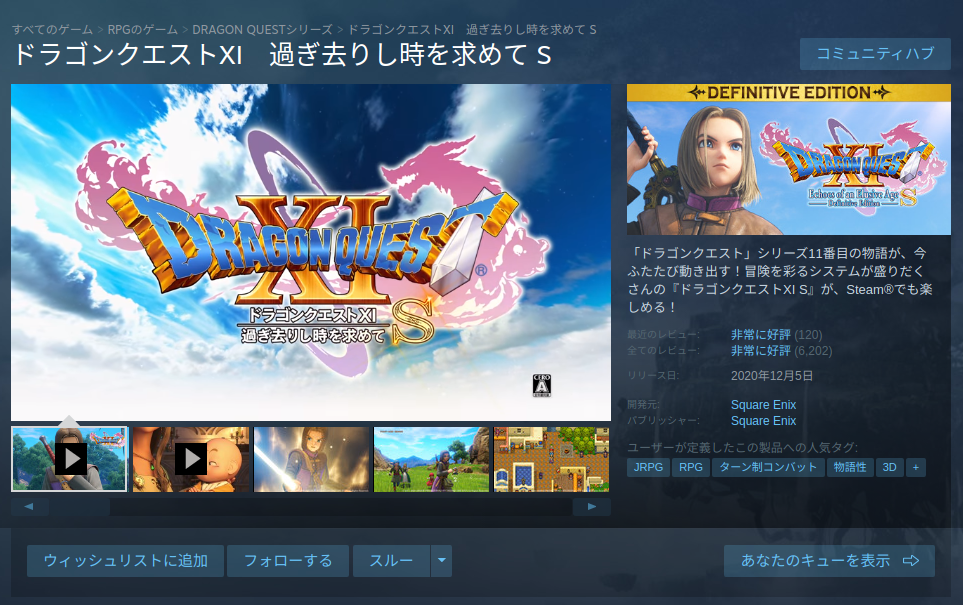

Ubuntu に Steam を入れてみた

昔話から始めると，2011年にアナログのテレビ電波が停波したじゃない。 まぁ東北の大震災の影響もあって足並みが揃わなかったけど。 そんで，当時はまだブラウン管テレビだったのよ，うちは。
アナログ停波で無用の長物になったブラウン管テレビは廃棄したんだけど，山ほどあったコンシューマゲーム機を繋ぐ先がなくなってしまったのね。 しかもタブレットやスマホで普通にゲームが出来る時代に入ってしまったことで，コンシューマゲーム（機）は全部押し入れに封印してしまった1。
ときは流れて。
近年 VTuber のゲーム実況をチラチラ見るようになって「やっぱ，終わりの見えない無間地獄のようなスマホゲームじゃなくて，お金払ってちゃんとしたタイトルもやりたい」と思うようになった。 とはいえ，いまさらコンシューマゲーム機を買う気はしないし（メガドライブミニ2は買うたけどね。若かりし頃の思い出ということで），かといって，自宅機は Ubuntu でゲーム向きの環境じゃないよなぁ，とかグルグル考えはじめた。
そういや NieR シリーズの Steam 版があるんだっけ。 あれはやってみたい…
そうこうするうち
なんてな記事も見かけるようになった。 なんでも Proton (Wine の fork らしい) によって Windows 用のゲームの多くが Linux 機でも動くようになったそうな。 こりゃあ試してみなければ。 せっかく夏休み満喫中だし（笑）
Ubuntu に Steam をインストールする
ググってみると Ubuntu に Steam を入れる方法はいくつかあるようだが，以下の公式ページから deb ファイルをダウンロードして APT でインストールするのが一番確実なようだ。

APT でのインストールで百個以上の関連パッケージを入れるのを見て若干後悔したり。 これ絶対に更新管理が面倒くさいよなぁ…
Proton を有効にする
Proton を有効にするには「設定」の「互換性」の項目で「他のすべてのタイトルでSteam Playを有効化」をONにすればいいらしい（アプリケーションの再起動が要求される）。

{kind=link}
この状態で試しに「ドラゴンクエストXI 過ぎ去りし時を求めて S」の体験版（無料）をダウンロード&インストール&起動してみた。

うっ，やっぱその辺に転がってるゲームコントローラではダメか（笑） しゃーない。 買ってくるか！
これならちゃんと動くな。 よしよし。 では仕切り直し。
ほうほう。 オープニングムービーは違和感なく動く。 体験版なのでゲーム画面は3D表示のみなのだが，これも問題なく動いている。 これならイケそうかな。
そういや，最近のゲームの流行りとか全く把握してないな。 ン十年ぶりにゲーム雑誌とか買ったほうがいいのだろうか。
ブックマーク
- ProtonDB | Gaming know-how from the Linux and Steam Deck community
- 自分だけのSteam Machineを組み立てる
- 【Ubuntu日和】【第3回】Ubuntuでもエルデンリングを動かせる！ SteamでWindows用のゲームをプレイしよう - PC Watch
参考

- はじめて学ぶ ビデオゲームの心理学 脳のはたらきとユーザー体験（UX）
- セリア ホデント (著), 山根 信二 (監修), 成田 啓行 (翻訳)
- 福村出版 2022-12-13
- 単行本（ソフトカバー）
- 4571210450 (ASIN), 9784571210457 (EAN), 4571210450 (ISBN)
- 評価
デジタル版が出そうもないので，諦めて紙の本を購入。ゲームデザイナやゲームエンジニアだけでなく，ソフトウェア・エンジニアは全員読むべき。あと，ゲーマーな人も読むといいよ。感想はこちら。

- Logicool G ゲームパッド コントローラー F710r PC ゲームワイヤレス usb FF14 Windows 版 滑らかな操作感 国内正規品 【 ファイナルファンタジーXIV 推奨周辺機器 】
- Logicool(ロジクール) (Release 2013-04-19)
- Personal Computers
- B00CDG7994 (ASIN), 2100001238384 (EAN), 4943765037880 (EAN)
- 評価
Steam のゲームで遊ぶために購入。無線だが Ubuntu でも問題なく動く。